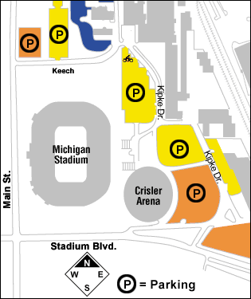

Directions to Crisler Arena |
|  |
Crisler Arena is located on Stadium Blvd. east of Michigan Stadium at the corner of Stadium Dr. and Main St. on the south side of Ann Arbor. The facility is directly accessible from I-94 at the Ann Arbor-Saline exit #175, and can be reached off the State St. exit #177, or Jackson Rd. exit #172. The address for Crisler Arena is 333 East Stadium Ann Arbor, MI For driving directions, click here |